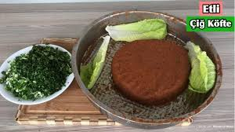

Malzemeler
- 2,5 su bardağı esmer bulgur
- 1 çay bardağı isot
- 1 çay bardağı zeytinyağı
- 3 yemek kaşığı domates salçası
- 5 yemek kaşığı nar ekşisi
- 1 adet soğan
- 1 adet limon suyu
- 3 yemek kaşığı tatlı toz kırmızı biber
Hazırlama Süresi: 60 dakika
Kaç Kişilik: 4

Yapılışı
- Bulguru derince bir kaba alın ve üstüne 1,5 bardak sıcak suyu gezdirin. Üstünü kapatıp 10 dakika beklemeye alın.
- Bulgur kabarırken soğanı robottan çekin ve tel bir süzgeçte bastırarak suyunu sıkın.
İsotu da bir kaseye alın ve üstüne sıcak su ekleyip 5 dakika kadar beklemeye alın.
- Bulgur kabardıktan sonra, mutfak robotuna kabarmış bulguru alın ve üstüne, robottan çektiğiniz kuru soğanı, ıslanmış isotu(suyuyla birlikte),
limon suyunu, nar ekşisini, zeytinyağını, tuzu , salçayı ve kırmızı biberi ekleyip, robottan ara ara durdurarak 10 dakika kadar çekin.
- Sonra bir kaba alın ve elinize birkaç dakika daha yoğurup şekillendirin.Bolca marul, domates ve limonla servis edin.
- Afiyetler olsun!